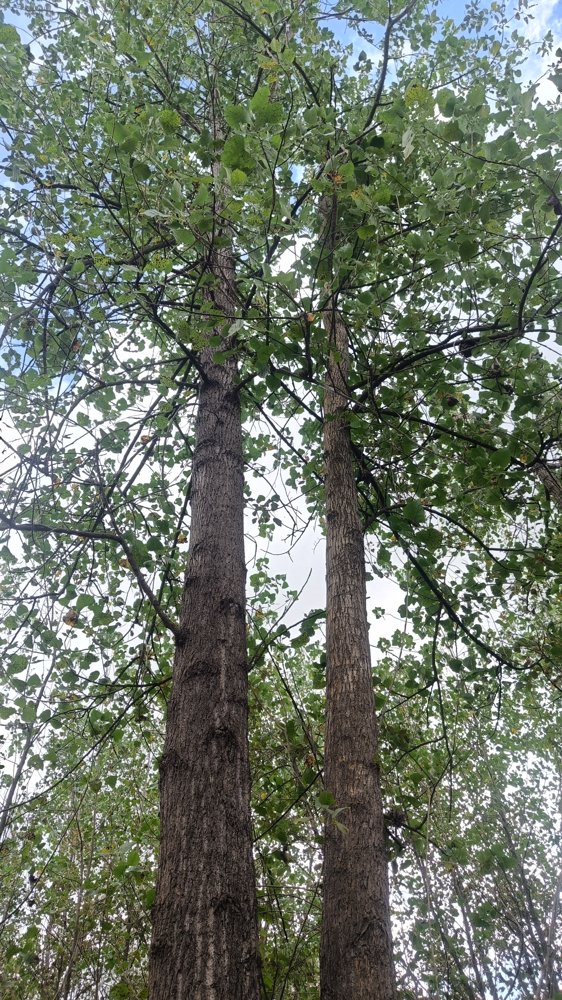

Trees & ShrubsExplore useful parts
Trees & ShrubsExplore useful parts
पापरल (Poplar)
Botanical identity: Populus species; exact species not confirmed.
Family: Salicaceae
Learning note: Poplars are deciduous trees. Leaf shape, buds and bark are needed to identify the exact species. This entry is primarily botanical and forestry information.
Identification notes
Photographs of a leaf (both sides), buds and bark can help narrow down the species. Different poplar species should not be treated as interchangeable.
📚 Plant Profile
Taxonomy | Species → Kingdom
Geographical Distribution & Farming
Populus की प्रजातियाँ उत्तरी गोलार्ध के समशीतोष्ण क्षेत्रों में पाई जाती हैं। भारत में कुछ poplar प्रजातियाँ विशेषकर उत्तर-पश्चिमी मैदानी क्षेत्रों में कृषि-वनीकरण/लकड़ी के लिए लगाई जाती हैं। स्थानीय नाम “पापरल” से प्रजाति निश्चित नहीं होती।
Farming: कई व्यावसायिक poplar clones को dormant season में hardwood cuttings से लगाया जाता है। गहरी, उपजाऊ और पर्याप्त नमी वाली मिट्टी में अच्छा विकास होता है। खेतों में दूरी, सिंचाई और clone चयन स्थानीय कृषि-वनीकरण सलाह के अनुसार होना चाहिए।
Morphology
Populus वंश के पेड़ सामान्यतः सीधे बढ़ने वाले, पर्णपाती और तेजी से बढ़ने वाले होते हैं। पत्तियाँ प्रजाति के अनुसार त्रिकोणीय, अंडाकार या गोलाई लिए हो सकती हैं; किनारे दाँतेदार रहते हैं। नर और मादा फूल अलग-अलग पेड़ों पर catkin (लटकते पुष्पक्रम) में हो सकते हैं। छाल उम्र के साथ बदलती है।
Anatomy
लकड़ीदार द्विबीजपत्री तना; annual growth rings और xylem vessels। पत्ती में जालिकावत शिराएँ; catkin पुष्पक्रम सामान्य।
Medicinal / Traditional Uses — 10 Research Points
- छाल/कलियाँ: कुछ Populus प्रजातियों की पारंपरिक topical preparations में उल्लेख।
- salicylate-संबंधित phenolics पर phytochemical शोध।
- कलियों के resinous extracts पर antimicrobial testing।
- सूजन-संबंधी गतिविधि पर प्रयोगशाला अध्ययन।
- antioxidant phenolics पर शोध।
- त्वचा-संबंधी topical formulations पर प्रारंभिक शोध।
- घाव-मॉडल में कुछ extracts का परीक्षण।
- essential oils/resins पर chemical profiling।
- लकड़ी और agroforestry इसका प्रमुख व्यावहारिक उपयोग है।
- species अज्ञात है—किसी औषधीय उपयोग को इस स्थानीय पेड़ पर लागू न करें।
ये पारंपरिक उल्लेख या शोध-विषय हैं, प्रमाणित इलाज/दवा की सलाह नहीं। पौधे, अर्क या essential oil का स्वयं सेवन/उपयोग न करें।
Research & Phytochemistry
Populus प्रजातियों में phenolic glycosides, flavonoids और salicylate-संबंधित यौगिकों पर अध्ययन हुआ है, पर संरचना प्रजाति और ऊतक के अनुसार बदलती है। केवल genus पहचान से किसी विशिष्ट यौगिक या औषधीय प्रभाव को इस पेड़ पर लागू नहीं किया जा सकता।
शोध पढ़ते समय species, plant part, extract dose, study type (lab/animal/human) और sample size देखें। Laboratory result अपने-आप clinical efficacy सिद्ध नहीं करता।
Safety & Limitations
सही species की पुष्टि के लिए पत्ती के दोनों ओर, शाखा/कली, छाल, catkin और पूरे पेड़ की स्पष्ट तस्वीरें चाहिए। पराग से एलर्जी संभव है। इस स्थानीय प्रविष्टि को औषधीय सलाह न मानें।